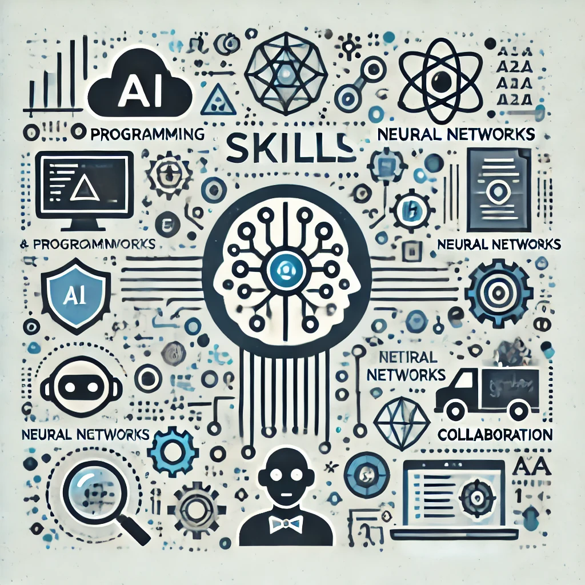
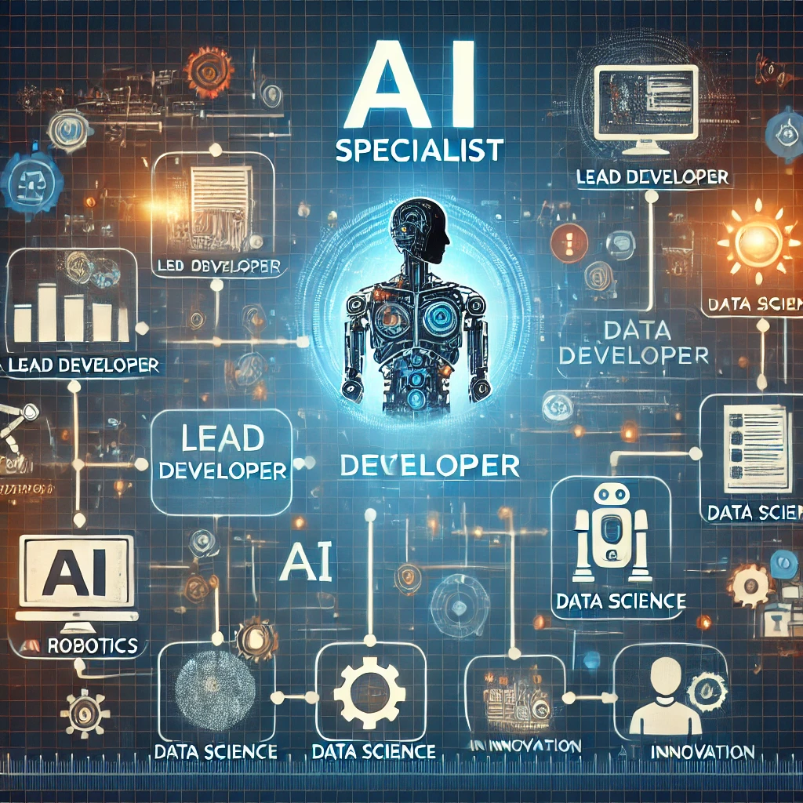

О профессии
Специалист по искусственному интеллекту — это эксперт, занимающийся разработкой и внедрением алгоритмов машинного обучения, анализа данных и создания интеллектуальных систем.
Обязанности специалиста по ИИ
Основные обязанности специалиста включают:
- Разработка и обучение моделей машинного обучения
- Анализ данных и выбор оптимальных алгоритмов
- Оптимизация производительности моделей
- Соблюдение этических норм и принципов при разработке ИИ
Необходимые навыки
Для успешной работы специалистом по ИИ необходимо обладать следующими навыками:
- Знание языков программирования (Python, R)
- Навыки работы с библиотеками машинного обучения (TensorFlow, PyTorch)
- Умение работать с большими данными и базами данных
- Аналитическое мышление и способность решать сложные задачи

Карьера и перспективы
Карьера специалиста по ИИ может включать различные направления, такие как:
- Разработка автономных систем
- Анализ данных в бизнесе
- Внедрение ИИ в медицине, образовании и других отраслях
Перспективы карьерного роста включают должности ведущего разработчика, исследователя или руководителя проекта.
